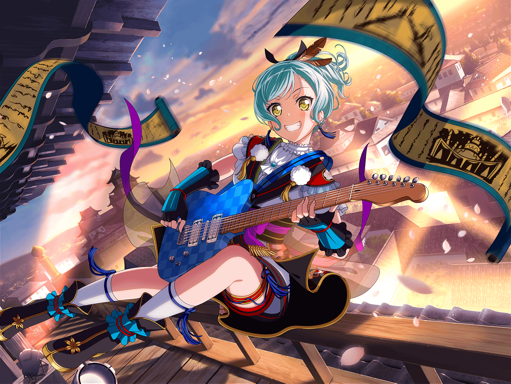

CiRCLE ロビー
日菜
まりなさ～ん！
{{userName}}さ～ん！
おはよ～！ 見て見て～！
まりな
おはよう、日菜ちゃん。
どうしたの？
日菜
じゃーん！
新曲のCDだよ！
今度リリースするやつ！
日菜
すっごくかっこいい曲だから、
２人に早く聴いてほしくって持ってきたんだ～！
まりな
この前リリースイベントしていたCDだね！
ありがとう、日菜ちゃん！
日菜
えへへ、どういたしまして。
２人とも、後で感想教えてね！
まりな
そういえば、その時のイベント
大変だったみたいだね
日菜
え、なんのこと？
まりな
なんのことって……
えーと、SNSで話題になってたよね？
まりな
ファン同士のケンカがあったって……
{{userName}}さんと心配だねって話してたんだよ？
日菜
あ～！ そのことか〜！
なんか、みんなはすっごく心配してた～！
まりな
みんなは、って日菜ちゃんは
心配してなかったの？
日菜
う～ん、あんまり、かな！
そもそもケンカってそんなに悪いことだと思わないし
日菜
もちろん、あんまりひどいケンカだったら、
あたしも嫌だけど
日菜
ケンカってお互いの気持ちを
ぶつけあうってことじゃん？
日菜
たまにはそうやって、気持ちをぶつけあわなきゃ、
伝わらないこともあると思うんだよね
まりな
なるほどね……
なんか達観してるね、日菜ちゃん
日菜
そうかな？
でも自分で実感したからそう思うのかも！
日菜
前におねーちゃんに自分の気持ちを
ぶつけたことがあったから……
日菜
そのおかげで、おねーちゃんと
少し近づけたような気がするんだよね
日菜
だから、お互い言いたいことが言えなくって、
変な空気になっちゃうよりは、
一回ケンカしてみた方がいいこともあるかな、って！
まりな
確かに……
日菜ちゃんの言うことも間違いじゃないかな
日菜
うんうん。ファンの人達のケンカだって、
イヴちゃんが自分の気持ちをぶつけたから、
解決することができたんだし……
日菜
やっぱり遠慮しないで気持ちをぶつけるのって、
大事なことなんだよ！
日菜
……あ、でも
日菜
この前そんな話を千聖ちゃんにしたんだけど、
そうしたら『日菜ちゃんは加減を知らないから、
それは少し心配だわ……』って言われたんだよね
まりな
うふふ……
千聖ちゃんの気持ちもわかる気がするなあ
日菜
えー、まりなさんも？
……って、{{userName}}さんもうなずいちゃってるし
日菜
ま、いっか！
練習始まるからそろそろ行くね！
日菜
新曲の感想忘れないでね～！